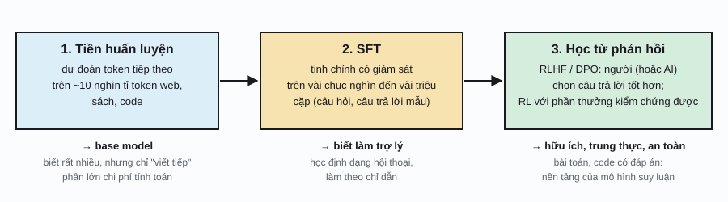
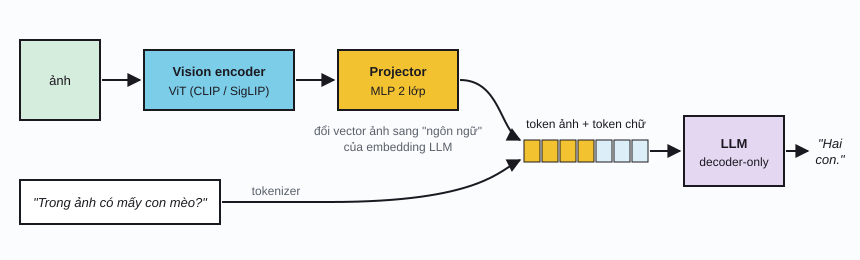
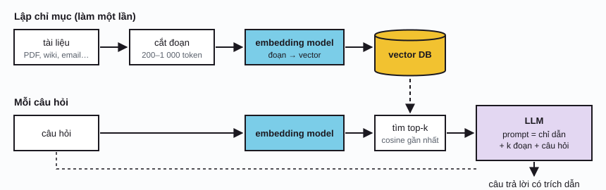
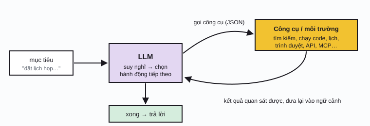

Transformer & genAI / Phần 4
VLM, RAG & AI khác
Ghép mọi mảnh của ba phần trước: một Transformer decoder thật lớn, huấn luyện để đoán token tiếp theo trên gần như toàn bộ văn bản của Internet, rồi được dạy cách trò chuyện, nhìn ảnh, tra cứu tài liệu và dùng công cụ. Phần này giải thích những thuật ngữ bạn gặp hằng ngày khi dùng hoặc xây hệ thống AI.
LLM được tạo ra như thế nào
Mô hình ngôn ngữ lớn (large language model, LLM) về kiến trúc chỉ là Transformer decoder-only ở Phần 1, với hàng tỉ đến hàng trăm tỉ tham số. Điều làm nên khác biệt nằm ở dữ liệu và quy trình huấn luyện gồm ba giai đoạn:

Tiền huấn luyện dùng đúng hàm mất mát cross-entropy cho token tiếp theo ở Phần 2. Để đoán tốt token tiếp theo của mọi loại văn bản, mô hình buộc phải học ngữ pháp, kiến thức thế giới, và cả một phần khả năng suy luận. Kết quả là base model: hỏi nó "Thủ đô của Pháp là gì?", nó có thể viết tiếp thêm năm câu hỏi địa lý thay vì trả lời.
SFT (supervised fine-tuning) dạy định dạng hội thoại bằng ví dụ mẫu. Học từ phản hồi tinh chỉnh tiếp bằng sự so sánh: với hai câu trả lời, câu nào tốt hơn? RLHF huấn luyện một mô hình phần thưởng \(r\) từ các so sánh này rồi tối ưu LLM bằng học tăng cường; DPO đạt mục tiêu tương tự mà không cần mô hình phần thưởng riêng.
πθ: LLM đang tối ưu; πref: mô hình sau SFT; số hạng KL giữ cho mô hình không "lách luật" phần thưởng bằng cách đi quá xa khỏi ngôn ngữ tự nhiên.
Scaling laws
Một phát hiện định hình cả ngành: loss của LLM giảm theo luật lũy thừa rất đều đặn khi tăng số tham số \(N\), số token huấn luyện \(D\) và lượng tính toán \(C\). Nhờ vậy có thể thử nghiệm ở quy mô nhỏ rồi dự đoán khá chính xác kết quả ở quy mô lớn hơn hàng nghìn lần, trước khi chi hàng chục triệu đô la cho một lần huấn luyện.
E: loss không thể giảm (độ ngẫu nhiên vốn có của văn bản); hai số hạng sau: phần thiếu do mô hình nhỏ và do ít dữ liệu. Hệ số theo Hoffmann et al. (2022): E = 1,69; A = 406,4; B = 410,7; α = 0,34; β = 0,28. Hệ số 6 = 2 FLOPs cho mỗi tham số mỗi token khi chạy xuôi, nhân 3 khi tính cả lan truyền ngược.
Scaling law kiểu Chinchilla
Chỉnh ngân sách tính toán CChạy một LLM: KV cache & bộ nhớ
Sinh văn bản có hai pha. Prefill: xử lý cả prompt cùng lúc, song song như khi huấn luyện. Decode: sinh từng token một; mỗi token mới cần attention tới mọi token trước nó. Để không tính lại key và value của các token cũ ở mỗi bước, ta lưu chúng vào KV cache. Bộ nhớ này tăng tuyến tính theo độ dài ngữ cảnh:
Hệ số 2: một cho K, một cho V; L: số lớp; nkv: số head key/value; T: số token trong ngữ cảnh. Llama 3 8B ở 16 bit: \(2\cdot 32\cdot 8\cdot 128\cdot 2 = 131\,072\) byte (128 KiB) mỗi token, tức khoảng 1 GB cho 8 000 token.
Bộ nhớ khi chạy LLM
Chọn mô hình, độ dài ngữ cảnh, độ chính xácPha decode thường bị giới hạn bởi băng thông bộ nhớ chứ không phải sức tính: mỗi token mới phải đọc toàn bộ trọng số và KV cache từ bộ nhớ GPU. Vì vậy các kỹ thuật như GQA, lượng tử hóa (mục sau) và FlashAttention (tính attention theo khối, không ghi ma trận \(n\times n\) ra bộ nhớ) quan trọng không kém việc tăng số phép tính.
VLM: LLM nhìn được ảnh
Mô hình thị giác–ngôn ngữ (vision-language model, VLM) phổ biến nhất có cấu trúc đơn giản đến bất ngờ: lấy vision encoder của CLIP hoặc SigLIP (Phần 3), thêm một projector nhỏ để đổi vector ảnh sang không gian embedding của LLM, rồi nối các "token ảnh" này trước token chữ. Với LLM, ảnh chỉ là một đoạn "từ ngoại ngữ" mà nó học cách đọc.

Huấn luyện thường có hai giai đoạn: (1) đóng băng encoder và LLM, chỉ huấn luyện projector trên cặp ảnh–chú thích để "căn chỉnh" hai không gian; (2) tinh chỉnh projector cùng LLM trên dữ liệu hội thoại có ảnh. Một ảnh 336×336 với patch 14 cho \(24^2 = 576\) token, ngang một trang văn bản; ảnh tài liệu độ phân giải cao được cắt thành nhiều ô nên có thể tốn vài nghìn token (thử máy tính trong demo ViT ở Phần 3). Một số mô hình khác (Flamingo, Llama 3.2 Vision) dùng cross-attention thay cho việc nối token.
RAG: tra cứu trước khi trả lời
Kiến thức của LLM bị đóng băng ở thời điểm huấn luyện, không chứa tài liệu nội bộ của bạn, và khi không biết, mô hình có thể bịa một câu trả lời nghe rất thuyết phục (ảo giác, hallucination). RAG (retrieval-augmented generation) giải quyết bằng cách tìm các đoạn tài liệu liên quan rồi đưa chúng vào prompt, như cho mô hình làm bài thi "được mở sách".

f: embedding model (thường là Transformer encoder huấn luyện tương phản, giống CLIP nhưng cho cặp câu hỏi–đoạn văn). Demo dưới thay \(f\) bằng vector TF-IDF để chạy được ngay trên trình duyệt.
RAG thu nhỏ
Gõ câu hỏi; xem đoạn nào được truy hồiMinh họa dưới đây làm cùng quy trình với dữ liệu thật: tìm bài trên Wikipedia qua API công khai, cắt phần mở đầu của các bài thành đoạn, xếp hạng đoạn và ghép prompt.
RAG trên Wikipedia
Truy hồi thật, xếp hạng đoạn, ghép promptDịch vụ ngoài: Wikipedia API (wikipedia.org)Chất lượng RAG phụ thuộc chủ yếu vào khâu truy hồi: cắt đoạn hợp lý (không cắt đôi một ý), kết hợp tìm theo từ khóa (BM25) với tìm theo nghĩa (dense), và dùng một reranker chấm lại top-k. Khi ngữ cảnh của LLM ngày càng dài (hàng trăm nghìn token), có trường hợp nhét thẳng cả tài liệu vào prompt đơn giản hơn RAG, nhưng tốn kém hơn cho mỗi câu hỏi.
Tinh chỉnh & nén mô hình
LoRA
Tinh chỉnh toàn bộ một mô hình 8 tỉ tham số cần lưu gradient và trạng thái optimizer cho cả 8 tỉ tham số: hàng trăm GB bộ nhớ. LoRA (low-rank adaptation) đóng băng trọng số gốc \(W_0\) và chỉ học một phần cập nhật có hạng thấp:
Số tham số cần học: \(r(d+k)\) thay vì \(dk\). B khởi tạo bằng 0 nên lúc đầu mô hình y hệt bản gốc. Sau khi học xong có thể cộng \(BA\) vào \(W_0\), nên không làm chậm suy luận. Có thể giữ nhiều "adapter" LoRA nhỏ (vài chục MB) cho nhiều tác vụ trên cùng một mô hình gốc.
LoRA: cập nhật hạng thấp
Chỉnh hạng rLượng tử hóa
Lượng tử hóa (quantization) lưu trọng số bằng số nguyên ít bit kèm một hệ số tỉ lệ (scale). Mô hình 70B ở 16 bit cần khoảng 141 GB chỉ riêng trọng số; ở 4 bit còn khoảng 35–38 GB (tùy phần lưu scale), vừa với một hoặc hai GPU, và chất lượng thường giảm không đáng kể. Kết hợp lượng tử hóa 4 bit với LoRA (QLoRA) cho phép tinh chỉnh mô hình lớn trên một GPU duy nhất.
Lượng tử hóa trọng số
Chỉnh số bit, cách chia scaleKhi nào dùng cách nào?
| Cách | Thay đổi gì | Chi phí | Dùng khi |
|---|---|---|---|
| Prompt engineering, few-shot | Chỉ dẫn và ví dụ trong prompt | Gần như 0 | Luôn thử đầu tiên |
| RAG | Thêm tài liệu liên quan vào prompt | Hạ tầng tìm kiếm, prompt dài hơn | Kiến thức thay đổi thường xuyên, cần trích dẫn nguồn |
| LoRA / QLoRA | Một phần nhỏ trọng số | Vài giờ GPU, cần dữ liệu mẫu | Cần phong cách, định dạng hay kỹ năng hẹp mà prompt không đủ |
| Tinh chỉnh toàn phần | Mọi trọng số | Đắt, dễ làm mô hình "quên" kỹ năng cũ | Lĩnh vực rất khác, dữ liệu rất nhiều |
| Lượng tử hóa | Cách lưu trọng số | Giảm nhẹ chất lượng | Chạy trên phần cứng nhỏ, phục vụ rẻ hơn |
Agent, mô hình suy luận & MoE
Agent và dùng công cụ
Một agent là LLM chạy trong vòng lặp: đọc mục tiêu, quyết định hành động, gọi một công cụ (tìm kiếm web, chạy code, đọc file, gọi API), đọc kết quả, rồi quyết định bước tiếp theo cho đến khi xong. LLM được huấn luyện để xuất lời gọi công cụ dưới dạng có cấu trúc (thường là JSON); các giao thức như MCP (Model Context Protocol) chuẩn hóa cách kết nối công cụ với mô hình.

Mô hình suy luận
Từ cuối 2024, nhiều mô hình được huấn luyện để suy nghĩ trước khi trả lời: sinh một chuỗi suy luận dài (chain of thought), thử, kiểm tra, sửa sai, rồi mới đưa đáp án. Chúng được huấn luyện bằng học tăng cường trên các bài toán có đáp án kiểm chứng được (toán, lập trình). Đây là một trục scaling mới: ngoài tăng tính toán khi huấn luyện, có thể tăng tính toán lúc suy luận (test-time compute) bằng cách cho mô hình "nghĩ" lâu hơn.
Mixture of Experts
Trong MoE, lớp FFN của mỗi khối được thay bằng nhiều FFN "chuyên gia", và một router nhỏ chọn top-k chuyên gia (thường k = 1–8) cho mỗi token. Mô hình có tổng số tham số rất lớn nhưng mỗi token chỉ dùng một phần nhỏ. Ví dụ Mixtral 8×7B có khoảng 47 tỉ tham số nhưng mỗi token chỉ kích hoạt khoảng 13 tỉ. Nhiều LLM lớn nhất hiện nay được cho là dùng MoE.
Bảng thuật ngữ
| Thuật ngữ | Ý nghĩa ngắn gọn |
|---|---|
| Base model / instruct model | Mô hình sau tiền huấn luyện (chỉ viết tiếp) / sau SFT và học từ phản hồi (biết trò chuyện, làm theo chỉ dẫn). |
| Context window | Số token tối đa mô hình đọc được cùng lúc, gồm cả prompt lẫn câu trả lời. |
| System prompt | Chỉ dẫn đặt ở đầu ngữ cảnh, quy định vai trò và quy tắc cho cả cuộc hội thoại. |
| In-context learning | Học một tác vụ chỉ từ vài ví dụ trong prompt, không cập nhật trọng số. |
| Hallucination | Mô hình đưa ra thông tin sai nhưng trình bày rất tự tin. |
| Embedding model | Mô hình biến văn bản (hoặc ảnh) thành vector để so sánh độ giống nhau; nền tảng của RAG. |
| KV cache | Bộ nhớ lưu key, value của các token đã xử lý để sinh token mới nhanh hơn. |
| GQA | Grouped-query attention: nhiều head query dùng chung một cặp K, V; giảm KV cache. |
| LoRA, QLoRA | Tinh chỉnh bằng ma trận hạng thấp; QLoRA thêm lượng tử hóa 4 bit cho mô hình gốc. |
| RLHF, DPO | Tinh chỉnh theo sở thích con người, có hoặc không có mô hình phần thưởng riêng. |
| MoE | Mixture of Experts: mỗi token chỉ đi qua vài "chuyên gia" FFN do router chọn. |
| Agent, tool use | LLM chạy trong vòng lặp, gọi công cụ bên ngoài để hoàn thành mục tiêu nhiều bước. |
| Test-time compute | Dùng thêm tính toán lúc trả lời (suy nghĩ lâu hơn, thử nhiều lần) để có kết quả tốt hơn. |
Lịch sử
- 2017
RLHF và MoE thưa
Christiano và cộng sự học phần thưởng từ so sánh của con người. Shazeer và cộng sự giới thiệu lớp MoE với router chọn chuyên gia.
- 2019
GPT-2
Mô hình 1,5 tỉ tham số viết được đoạn văn mạch lạc; OpenAI ban đầu chỉ công bố từng phần vì lo ngại lạm dụng.
- 2020
Scaling laws, GPT-3, RAG
Kaplan và cộng sự công bố luật lũy thừa của loss. GPT-3 (175B) cho thấy khả năng học từ vài ví dụ trong prompt. Lewis và cộng sự đặt tên RAG.
- 2021
LoRA
Hu và cộng sự (Microsoft) đề xuất tinh chỉnh bằng ma trận hạng thấp.
- 2022
Chinchilla, InstructGPT, ChatGPT
Hoffmann và cộng sự sửa lại scaling law: cần nhiều dữ liệu hơn nhiều. InstructGPT trình bày quy trình SFT + RLHF. ChatGPT ra mắt tháng 11 và có 100 triệu người dùng trong khoảng hai tháng.
- 2023
Mô hình mở, VLM, DPO, QLoRA
Meta công bố Llama (giấy phép nghiên cứu) rồi Llama 2 (dùng thương mại được), mở đầu làn sóng mô hình mở trọng số; GPT-4 nhận cả ảnh; LLaVA mở đường cho VLM mở. DPO và QLoRA làm tinh chỉnh rẻ và đơn giản hơn. Mixtral phổ biến MoE mở.
- 2024–25
Agent và mô hình suy luận
Ngữ cảnh dài tới hàng triệu token; MCP được công bố (11/2024) để chuẩn hóa kết nối công cụ. OpenAI o1 (9/2024) và DeepSeek-R1 (1/2025) mở ra làn sóng mô hình suy luận huấn luyện bằng học tăng cường. Agent lập trình và agent dùng máy tính trở thành ứng dụng chính.
Tài liệu tham khảo
- J. Hoffmann et al., "Training Compute-Optimal Large Language Models" (Chinchilla), 2022. arXiv:2203.15556.
- L. Ouyang et al., "Training language models to follow instructions with human feedback" (InstructGPT), 2022. arXiv:2203.02155.
- R. Rafailov et al., "Direct Preference Optimization", NeurIPS 2023. arXiv:2305.18290.
- H. Liu et al., "Visual Instruction Tuning" (LLaVA), NeurIPS 2023. arXiv:2304.08485.
- P. Lewis et al., "Retrieval-Augmented Generation for Knowledge-Intensive NLP Tasks", NeurIPS 2020. arXiv:2005.11401.
- E. J. Hu et al., "LoRA: Low-Rank Adaptation of Large Language Models", 2021. arXiv:2106.09685.
- T. Dettmers et al., "QLoRA: Efficient Finetuning of Quantized LLMs", 2023. arXiv:2305.14314.
- J. Ainslie et al., "GQA: Training Generalized Multi-Query Transformer Models", 2023. arXiv:2305.13245.
- S. Yao et al., "ReAct: Synergizing Reasoning and Acting in Language Models", 2022. arXiv:2210.03629.
- A. Q. Jiang et al., "Mixtral of Experts", 2024. arXiv:2401.04088.